Explore Milan
A Brief History
Milan developed from the Roman settlement of Mediolanum into a medieval commune and later the court of the Visconti and Sforza families, who commissioned churches and the refectory housing Leonardo da Vinci's Last Supper. Spanish and Austrian rule followed before the 19th-century unification of Italy made Milan an industrial and financial engine. Rail terminals, the Galleria, and postwar skyscrapers record commerce and design leadership.
Attractions Map
Top Sights & Activities
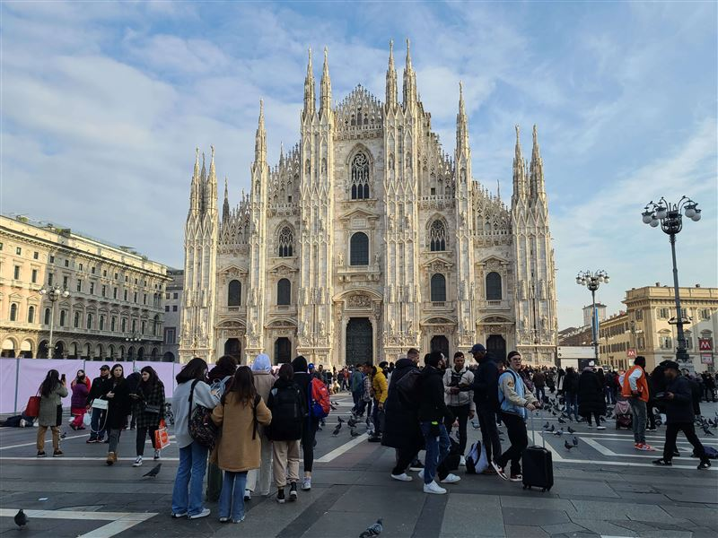
Duomo di Milano
Milan Cathedral was begun in 1386 and continued across many centuries, producing one of Europe's largest Gothic churches. The cathedral became the main religious monument of the city and a symbol of Milan's civic and episcopal status. Its marble facade, spires, and roof terraces offer close views of the sculptural decoration and the surrounding piazza.
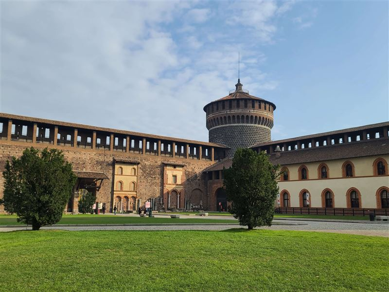
Sforzesco Castle
Sforza Castle was rebuilt in the 15th century by the Sforza dynasty on the site of an earlier Visconti fortress. It later served military functions and now houses civic museums that trace the courtly and urban history of Milan. The courtyards, towers, and Michelangelo Pietà Rondanini display connect Renaissance patronage with later city institutions.
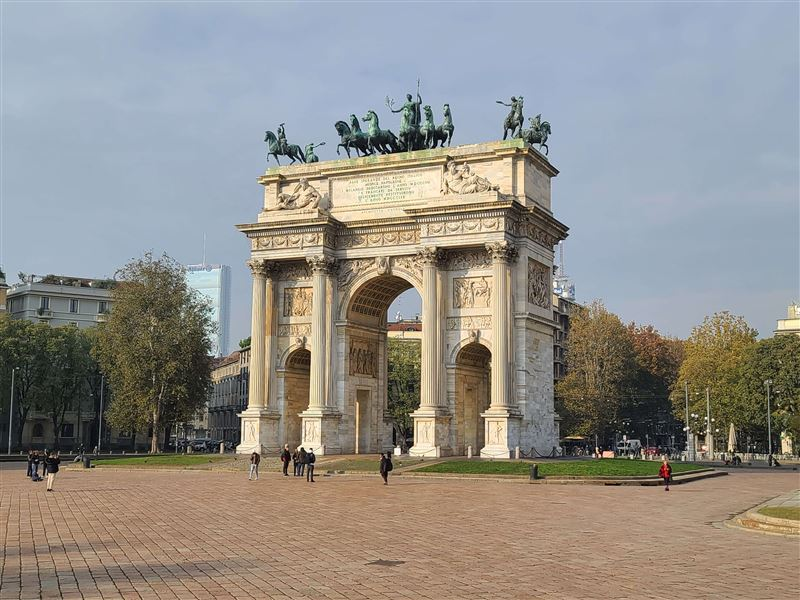
Arco della Pace
The Arco della Pace was begun in the Napoleonic period and completed under Austrian rule in the 19th century. It stands at the end of Corso Sempione as a ceremonial urban gate tied to modern Milanese planning. The neoclassical arch frames the approach to Parco Sempione and the Sforza Castle district from the northwest.
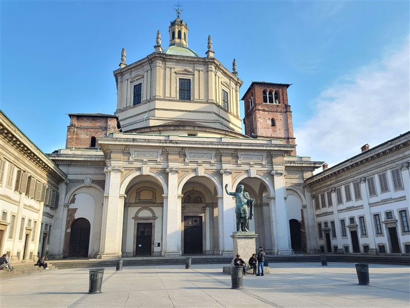
Basilica di San Lorenzo, Milano
San Lorenzo is an early Christian church rebuilt and altered across later centuries near one of the oldest monumental zones of Milan. Its long history and nearby Roman remains connect it with the late antique city. The basilica's chapels and courtyards preserve layers of early Christian, Romanesque, and Renaissance building in the city center.
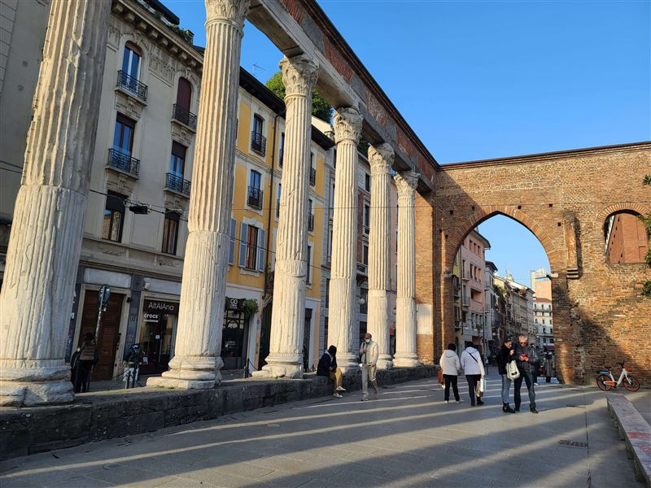
Colonne di San Lorenzo
The Columns of San Lorenzo are a Roman colonnade relocated to the basilica area in late antiquity. They remain one of the clearest surviving groups of Roman monumental stonework in Milan's center. The sixteen Corinthian columns stand on the piazza in front of the basilica, where evening gatherings and open-air events often take place.
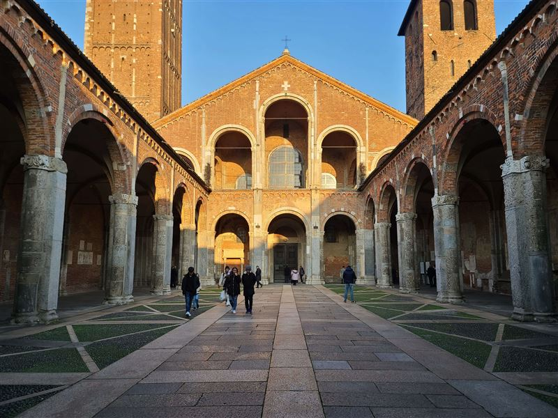
Basilica of Sant'Ambrogio
The Basilica of Sant'Ambrogio was founded in the 4th century by Ambrose, bishop of Milan, and rebuilt in Romanesque form during the Middle Ages. It is one of the main churches associated with the city's religious history. The atrium, gold altar, and crypt of Saint Ambrose draw visitors interested in early Christian Milan.
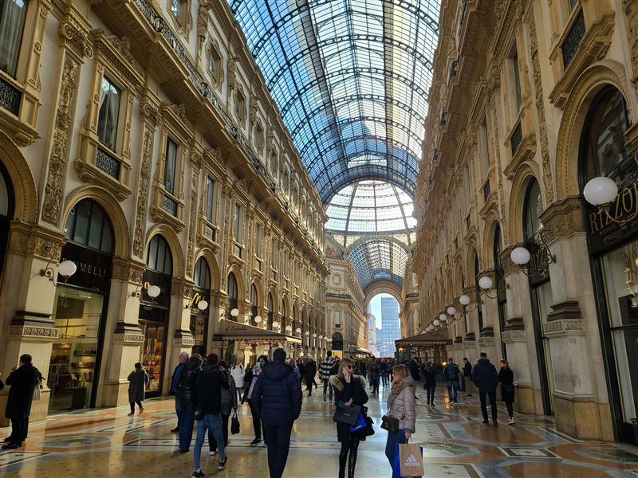
Galleria Vittorio Emanuele II
The Galleria was built between 1865 and 1877 as a glazed commercial arcade joining Piazza del Duomo with La Scala. It became one of the main symbols of unified Italy's urban modernization in Milan. The iron-and-glass vault, mosaic floors, and shopfronts create a covered passage that remains a busy route for pedestrians and café patrons.
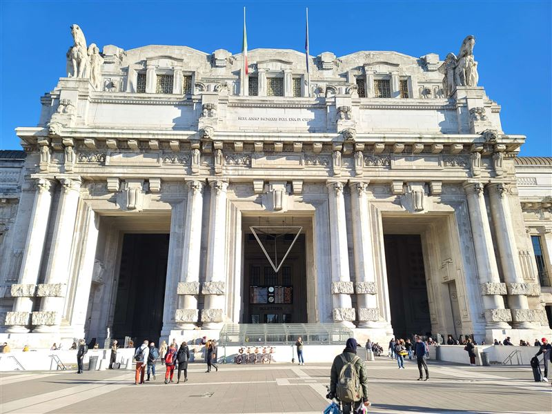
Milan Central Station
Milano Centrale opened in 1931 as the city's main long-distance railway station. Its monumental design and scale reflect the expansion of modern transport networks and the political ambitions of the early 20th century. The vast hall, stone facades, and platform canopies serve high-speed and international trains linking Milan with the rest of Europe.
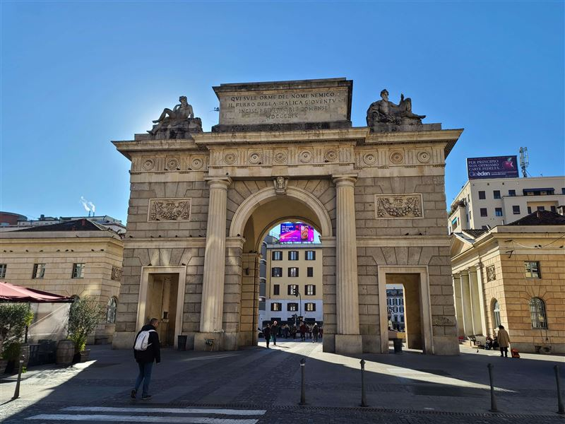
Porta Garibaldi
The Porta Garibaldi area connects a surviving 19th-century city gate with one of Milan's main modern rail and business districts. It shows the shift from historic fortification lines to contemporary transport infrastructure. The gate and surrounding piazza mark the edge of the old city wall route toward Corso Como and the Isola quarter.
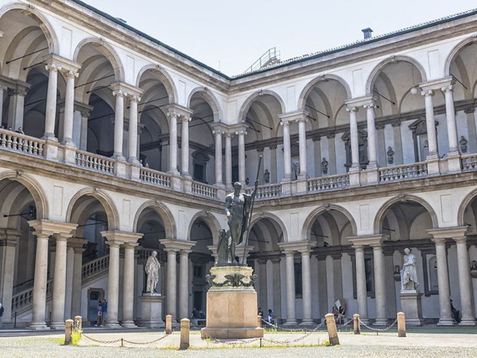
Pinacoteca di Brera
The Pinacoteca di Brera grew from Napoleonic-era collections and remains one of Italy's main public art museums. The former Jesuit college and academy complex presents painting closely tied to the history of Lombardy and the Italian states. Masterworks by Mantegna, Raphael, and Caravaggio anchor a collection focused on northern Italian schools.
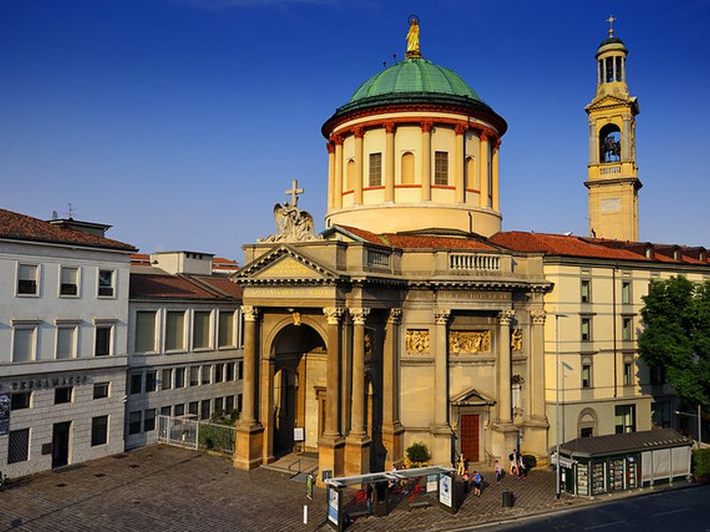
Basilica di Santa Maria delle Grazie
Santa Maria delle Grazie was built for the Dominicans in the 15th century and later became famous for Leonardo da Vinci's Last Supper in the adjoining refectory. The church reflects Renaissance patronage under the Sforza court. The refectory mural requires advance booking, while the church nave and cloister can be visited separately.
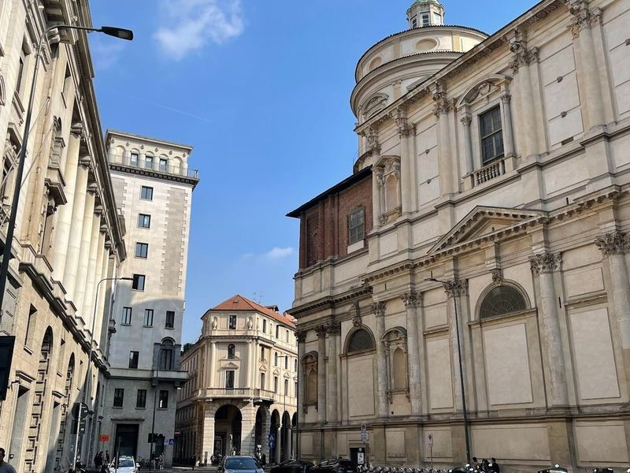
Chiesa di San Fedele
Chiesa di San Fedele is a historic Jesuit church In Milan, near the famous Milan Cathedral and Galleria Vittorio Emanuele II. Dating back to the 16th century, it is dedicated to St. Fidelis of Como and houses a crypt as well as a collection of religious artworks, relics, and paintings. The church also features the Museo San Fedele, which serves as a cultural and museum space showcasing mainly an art gallery.
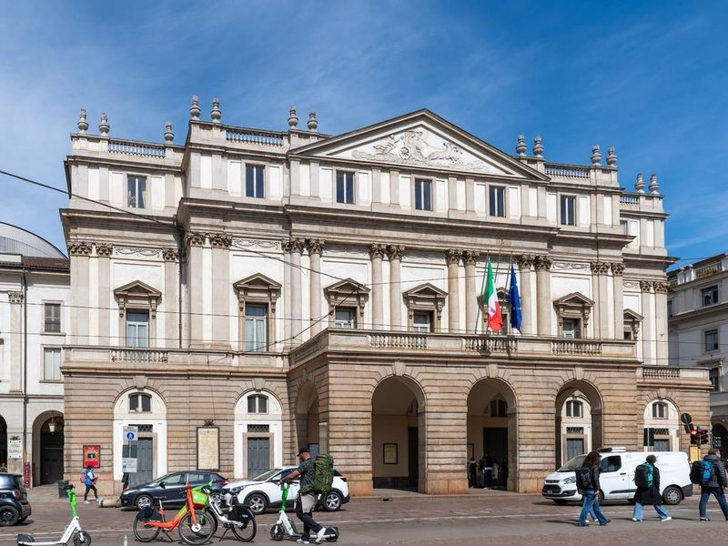
Teatro alla Scala
Teatro alla Scala, also known as La Scala, is an opulent 18th-century theater renowned for its Italian opera and ballet performances. The theater features a museum showcasing its rich history through exhibitions of costumes, musical instruments, photographs, and set designs. Additionally, the Livia Simoni Library houses an extensive collection of 150,000 volumes of librettos, scores, and periodicals.
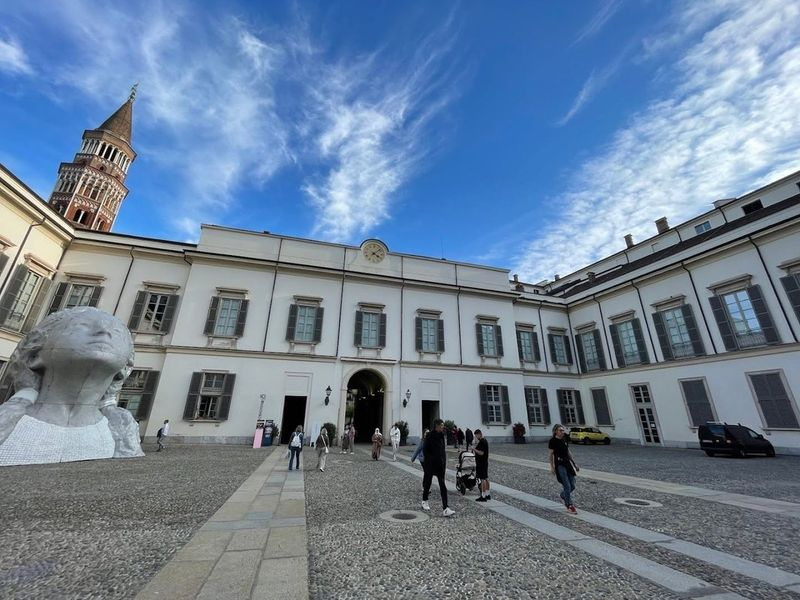
Palazzo Reale di Milano
Palazzo Reale di Milano is an 18th-century palace featuring grand staircases, regal hallways, and exquisite artworks. It is conveniently located near several notable attractions in Milan, making it easily accessible for travellers. The palace serves as a major art gallery with a focus on modern artists such as Picasso, Chagall, Warhol, Pollock, and Kandinsky.
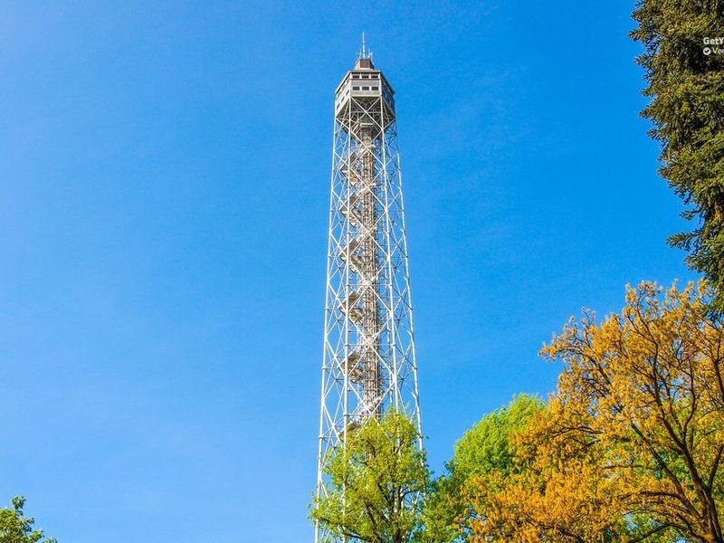
Branca Tower
Branca Tower, located in Sempione Park near Sforzesco Castle, is a steel structure originally built for the 1933 Triennale. travellers can ascend to a height of 109m using stairs or an elevator to enjoy panoramic views of Milan's skyline, including landmarks like the Duomo di Milano and Sforza Castle. The tower offers vantage points in the city.
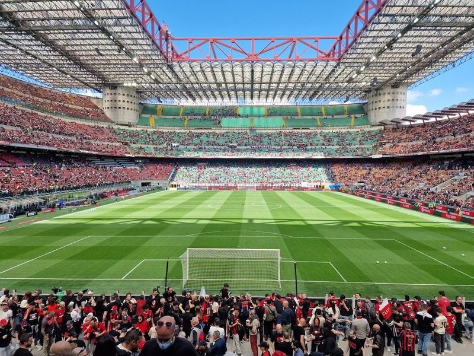
San Siro Stadium
San Siro Stadium, also known as the Giuseppe Meazza Stadium, is the home ground for both A.C. Milan and Inter Milan. It is located in the Fiera neighborhood of Milan, which offers a relaxing suburban atmosphere while still being well-connected to the city. The stadium has a seating capacity of over 80,000 people, making it the largest stadium in Italy and in Europe.
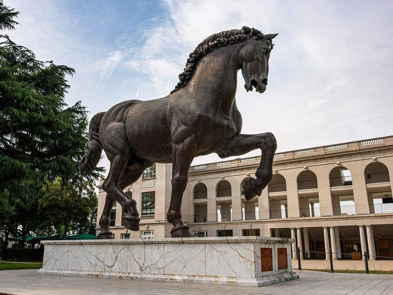
Leonardo's Horse
Leonardo's Horse is a 7-meter bronze statue that pays homage to the visionary work of Leonardo da Vinci. Originally conceived as part of an equestrian monument for Francesco Sforza in the late 15th century, this magnificent sculpture was never completed by Da Vinci himself. However, thanks to artist Nina Akamu’s dedication and skill, it was brought to life in 1999 from Leonardo's detailed sketches.
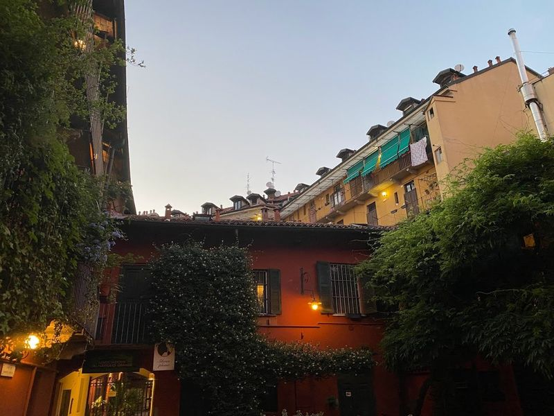
Naviglio Grande
Naviglio Grande is a hidden gem in Milan that many travellers overlook, yet it offers a unique charm and beauty. Stretching from Porta Ticinese to the Ticino River, this historic canal dates back to 1177 and has evolved into a picturesque area perfect for leisurely strolls. The city center section is particularly enchanting, lined with quaint buildings, vibrant shops, and delightful restaurants where savor authentic Italian cuisine.
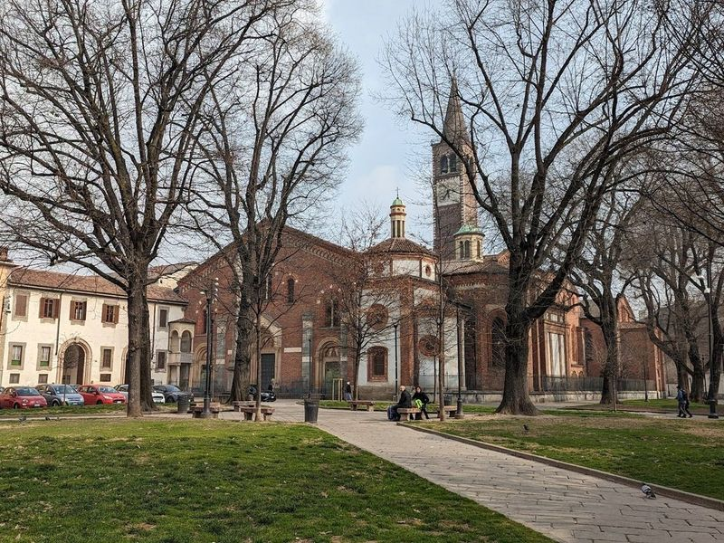
Basilica di Sant'Eustorgio
Nestled near Porta Ticinese, the Basilica di Sant'Eustorgio is a captivating Romanesque-style Catholic church that boasts a rich history and artwork. Founded in the 4th century and later rebuilt in the 19th century, this ancient structure has long been significant to Milan's spiritual landscape.
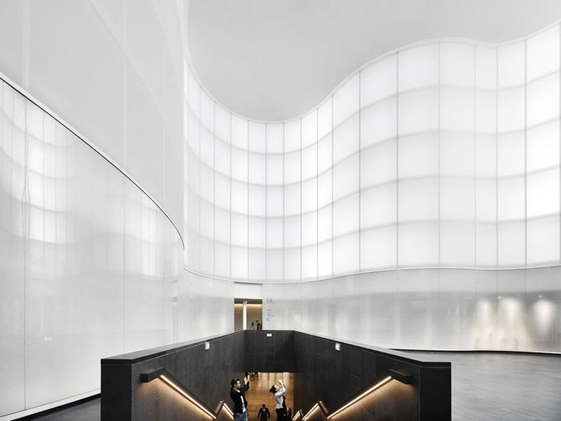
Mudec
MUDEC, short for the Museum of Cultures, is a modern museum housed in a restored factory in Milan's Tortona district. The interdisciplinary center aims to be Italy's main hub for research, promotion, and edutainment of creativity and art from around the world. The building features square-shaped forms coated with zinc and a glass structure that is illuminated 24/7. It hosts international exhibitions and ethnographic collections from the Municipality of Milan, boasting over 7000 works of art.
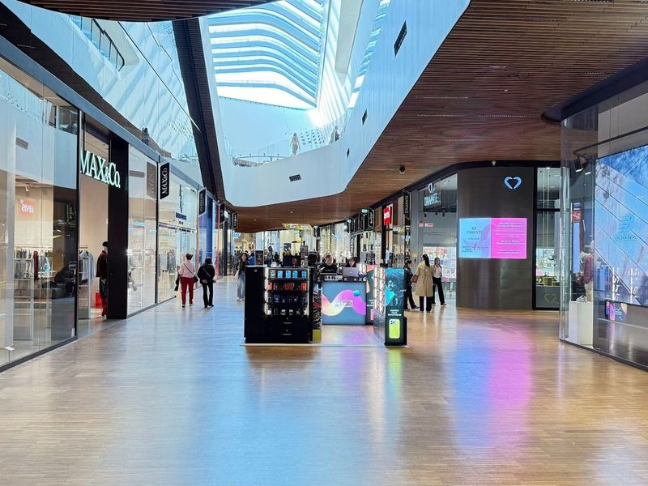
CityLife Shopping District
Nestled within the modern City Life district in Milan, the CityLife Shopping District stands out as a cutting-edge urban commercial hub. Designed by renowned architect Zaha Hadid, this futuristic shopping area spans 32,000 square meters and features 100 stores offering fashion, design, homeware, beauty products, and accessories. In addition to retail therapy, travellers can enjoy diverse dining options with restaurants ranging from casual eateries to those helmed by acclaimed chefs.
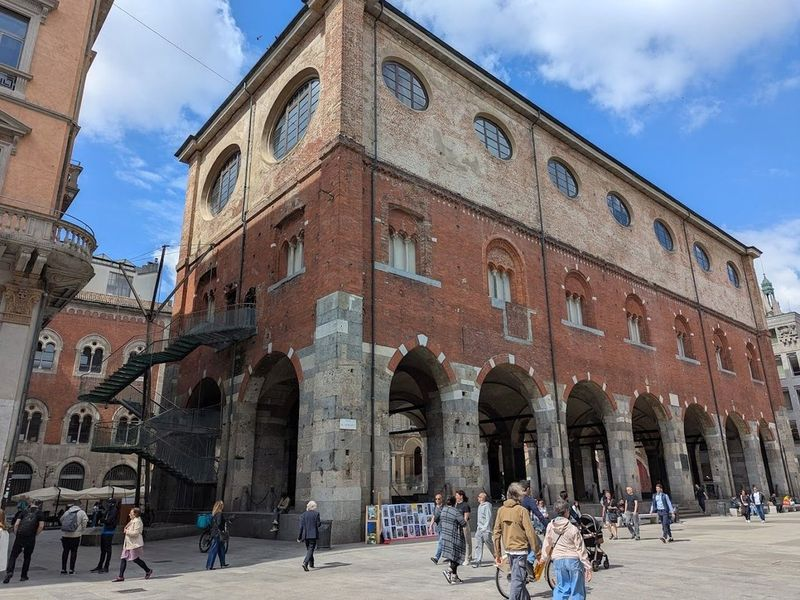
Piazza Mercanti
Piazza Mercanti, also known as The Merchants Square, is a historic medieval public square in Milan that served as the city's commercial center during the Middle Ages. It has retained its charming medieval look and is a unique landmark in Milan. The square features several important medieval buildings such as Palazzo della Ragione, Loggia degli Osii, Casa dei Panigarola, and Palazzo delle Scuole Palatine.
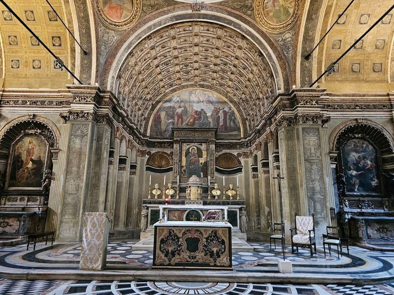
Chiesa di Santa Maria
Chiesa di Santa Maria presso San Satiro is an elegant church dating back to the 15th century, located near the Duomo in Milan. It was founded by Archbishop Ansperto in the 9th century and is dedicated to Saint Satyrus. The site is catalogued as a church.
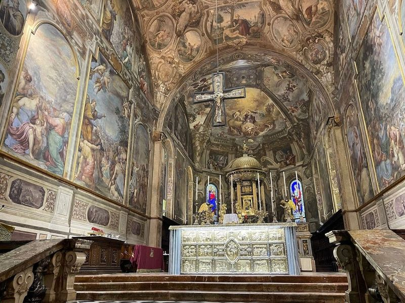
Parrocchia di S. Giovanni Battista Duomo di Monza
The Parrocchia di S. Giovanni Battista Duomo di Monza is a centuries-old church with a marble facade and intricate frescoes, as well as a treasury of religious relics. It stands on the site where Queen Theodelinda built a basilica in 595 AD, according to medieval legend inspired by a dream she had.
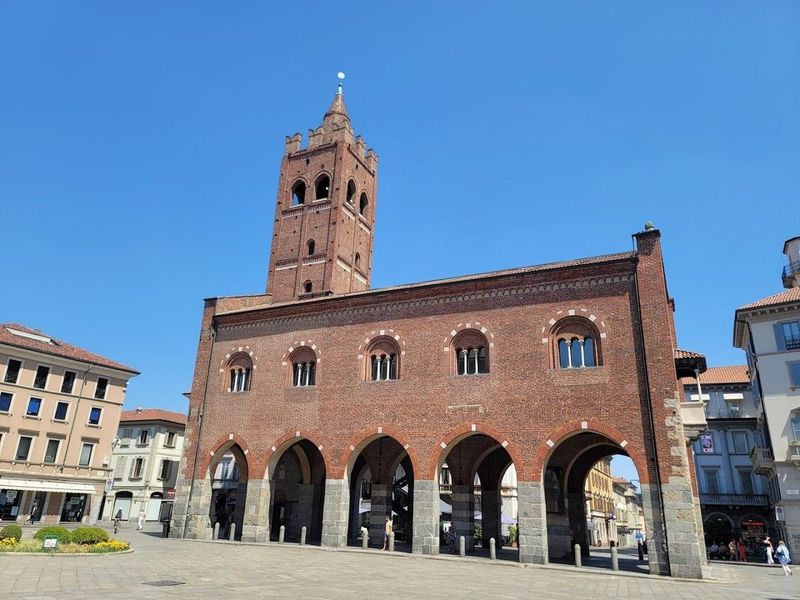
Ponte dei Leoni
Nestled in the heart of Monza, the Ponte dei Leoni is a triple-arched pedestrian bridge that dates back to the 19th century. Adorned with majestic stone lions at each corner, this structure offers travellers a picturesque crossing over the serene Lambro River. As you stroll across this enchanting bridge, feel as if you've stepped into a fairytale, surrounded by its historical charm and beauty.
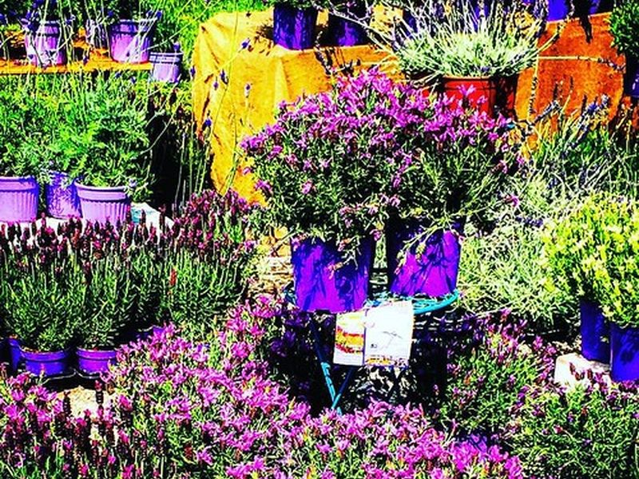
Indro Montanelli Gardens
A peaceful public park ideal for relaxation, featuring walking paths, statues, and a planetarium. The site is catalogued as a tourist attraction. Indro Montanelli Gardens is listed among principal sites for Milan within Italy. Municipal and regional heritage listings document its place in the historic centre and visitor routes through Milan.
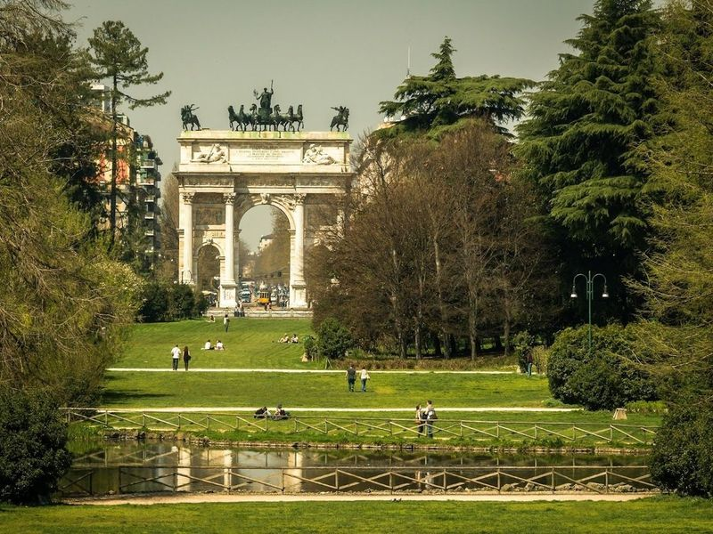
Parco Sempione
Parco Sempione is a must-visit location in Milan, known for its beautiful landscaping by Emilio Alemagna. This park offers a perfect blend of outdoor activities such as walking trails, running paths, and dog-friendly areas. It also features historic architecture like the triumphal Arco della Pace and the romantic Ponte delle Sirenette with statues of little mermaids.
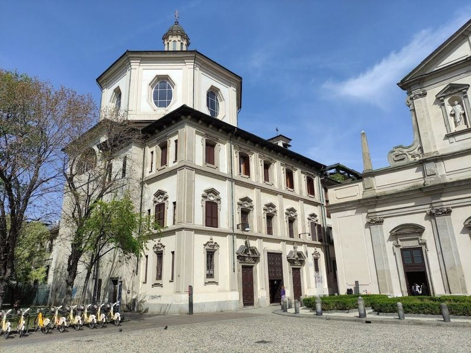
Santuario di San Bernardino alle Ossa
Nestled in the heart of Milan, the Santuario di San Bernardino alle Ossa is a captivating 13th-century Catholic church that offers a unique glimpse into history and artistry. This remarkable site features an ossuary adorned with intricate frescoes, where thousands of human skulls and bones create a haunting yet fascinating atmosphere. The chapel evokes comparisons to Paris's Cemetery of the Innocents, as it houses remains unearthed after a bell tower collapse in 1964.
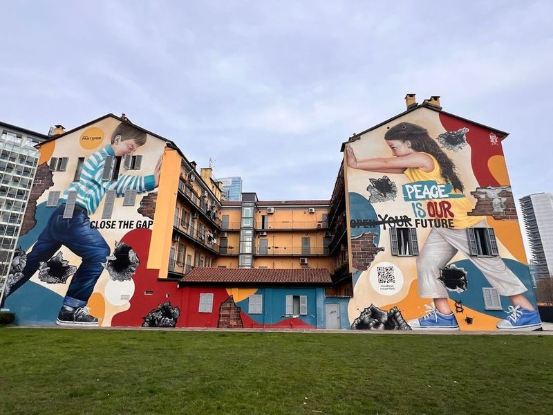
Bosco Verticale
Bosco Verticale, also known as the Vertical Forest, is a pioneering architectural project in Milan. Comprising two towers adorned with trees, shrubs, and plants on every floor, it serves as a sustainable model for urban living. Designed by Stefano Boeri Studio, this innovative structure houses around 900 trees and over 20,000 plants that contribute to noise reduction, oxygen production, and solar radiation protection.
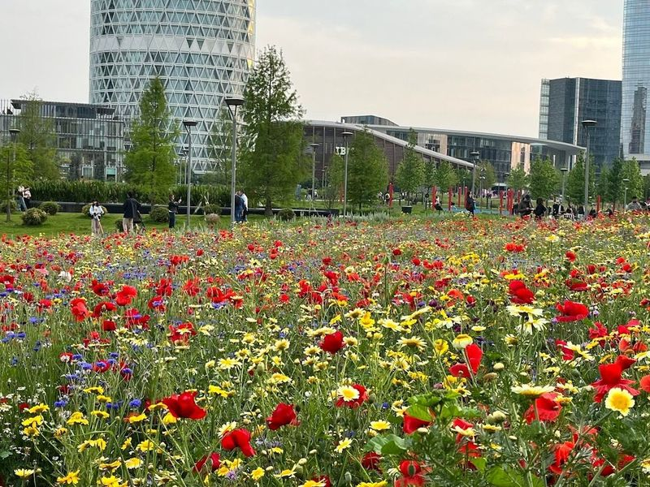
BAM - Biblioteca degli Alberi Milano
Parco Biblioteca degli Alberi is a vast green space in central Milan that features a library of trees and community events. The site is catalogued as a park. BAM - Biblioteca degli Alberi Milano is listed among principal sites for Milan within Italy.
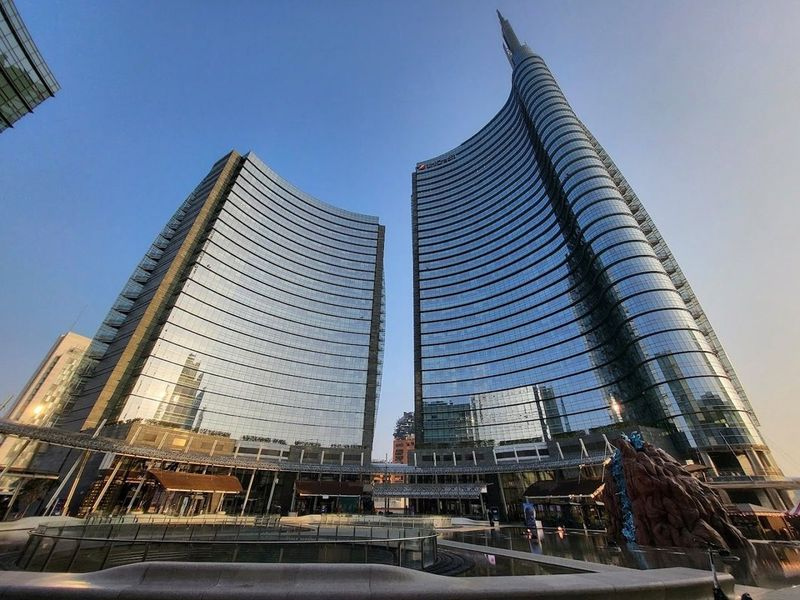
UniCredit Tower
UniCredit Tower is a remarkable glass-fronted skyscraper in Milan, Italy. Standing at 231 meters with 31 floors and a distinctive spire, it is the tallest building in the country. Designed by Cesar Pelli, this tower serves as the headquarters of UniCredit, Italy's largest bank. Situated in the Porta Nuova district, it forms part of a major business development alongside residential structures.
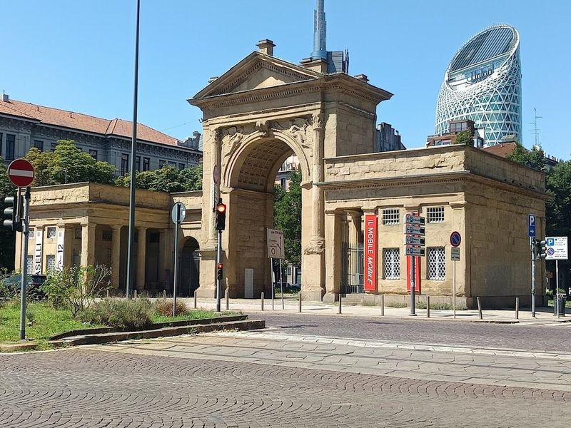
Porta Nuova
Porta Nuova is a modern urban district in Milan known for its contemporary architecture, offices, shops, and parks. The area underwent a transformation for the 2015 World Expo and now boasts futuristic skyscrapers, including the Bosco Verticale towers. Piazza Gae Aulenti serves as the central hub of this revitalized area. Nearby Isola neighborhood offers a vibrant market, trendy dining spots, and the Italian branch of New York's famous Blue Note jazz cafe.
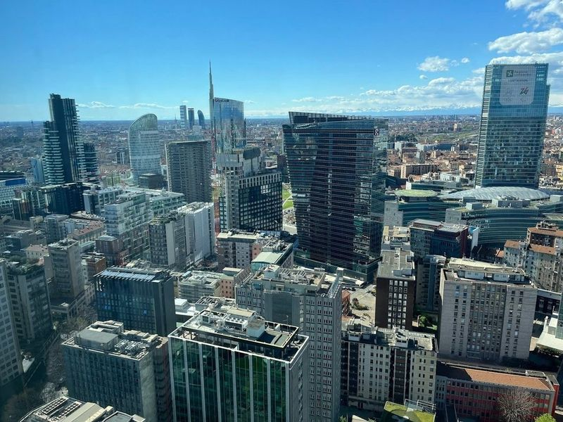
Pirelli Tower
Pirelli Tower, also known as Pirellone, is a 1960 reinforced concrete skyscraper in Milan. It was designed by Gio Ponti for the Pirelli industrial family and stands as a symbol of modernist architecture in the city. The tower's distinctive feature is its broad, tapered main facades, which have served as an inspiration for other skyscrapers around the world.
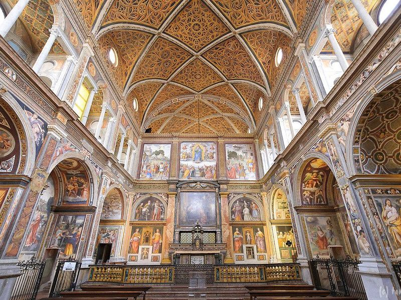
Chiesa di San Maurizio al Monastero Maggiore
Nestled in the heart of Milan, the Chiesa di San Maurizio al Monastero Maggiore is a 16th-century church that once served as a monastery. Often referred to as the Sistine Chapel of Milan, this hidden gem boasts an array of vibrant frescoes by Bernardino Luini, a contemporary of Leonardo Da Vinci. The church features an expansive nave divided into two sections: one for the congregation and another for the nuns' choir.
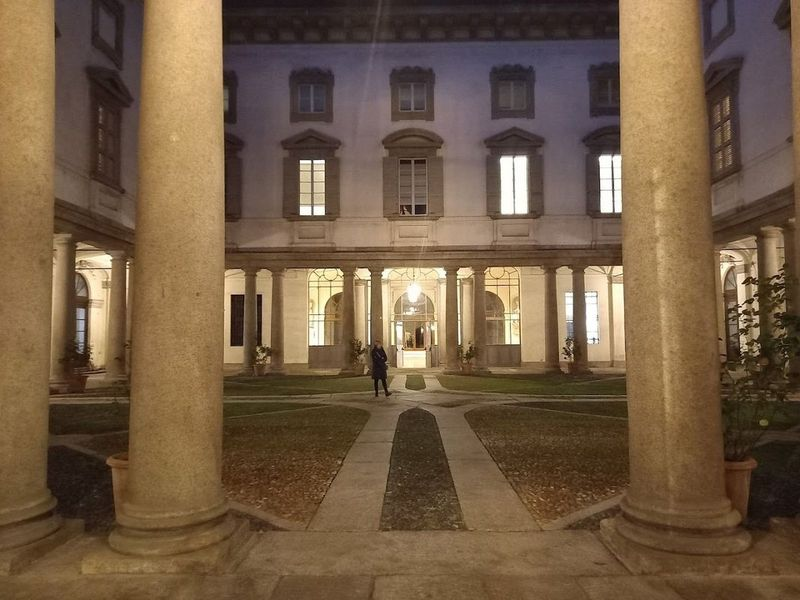
Palazzo Litta - Metamorphosis in Motion
The Palazzo Litta is a beautiful seventeenth century palace in Milan which has been used for governmental offices and a historic performing arts space. It is located in an amazing Fantastico location and is well worth a visit for anyone interested in historical landmarks or fashion events. The guide was SUPER knowledgeable about the palace and its history, which made our visit very interesting. Overall, I would definitely recommend a visit to this wonderful place!.
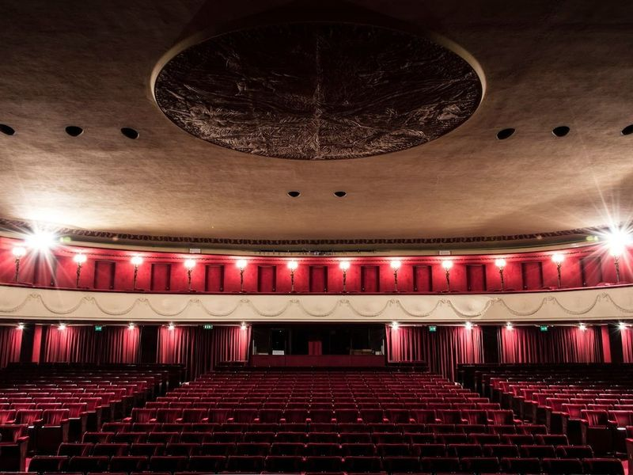
Teatro Manzoni
Teatro Manzoni is a historic gem nestled in Milan, boasting a beautifully frescoed foyer and an impressive auditorium that seats 842 guests. Since its inception in 1850 by seven noblemen aiming to revive the significance of prose, this theater has been a stage for renowned plays and live music performances. It has hosted celebrated works like 'Martiri' by Carlo Torelli and 'Kean' by Dumas, establishing itself as a cornerstone of dramatic arts.
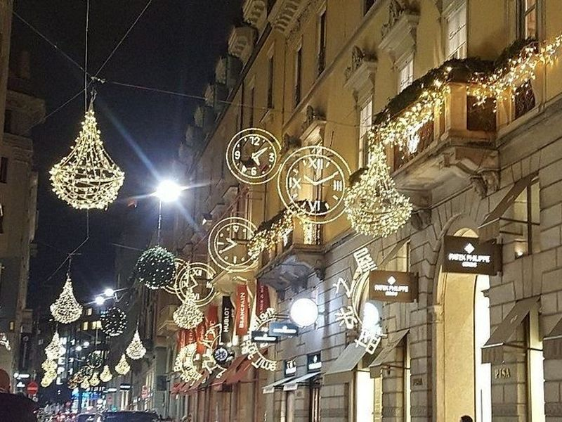
Via Monte Napoleone
Via Monte Napoleone is a renowned and elegant shopping street in Milan, Italy. It is home to a variety of global and Italian high fashion brands, as well as jewelry stores. During special occasions like holidays or fashion week, the street comes alive with extravagant displays in the shop windows, showcasing the latest designs in their light. travellers can enjoy the luxurious window shopping experience, especially after sundown when the illuminated displays create a captivating atmosphere.
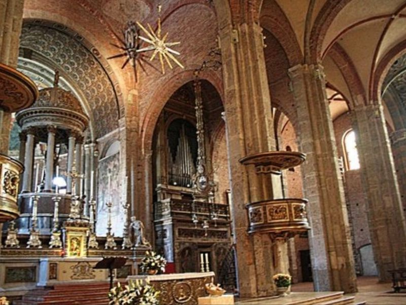
Basilica of San Simpliciano
The Basilica of San Simpliciano is an early Christian church in Milan, Italy, with a rich history and elegant interior. Commissioned by Saint Ambrose in the 4th century, it was dedicated to virgins and built on the site of a pagan cemetery. The basilica houses relics of several saints and features art and architectural elements from various eras.
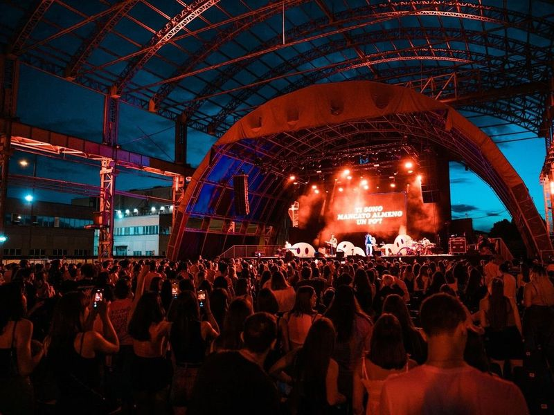
Carroponte
The Carroponte concert hall is a spacious and open-air venue that showcases various musical acts, festivals, and local events. It boasts an array of bars and restroom facilities that ensure minimal waiting time for guests. While the entry process may be slightly confusing due to queuing in a pen, the sunset behind the stage makes up for any inconvenience. However, there is limited shade available for those who wait throughout the day.